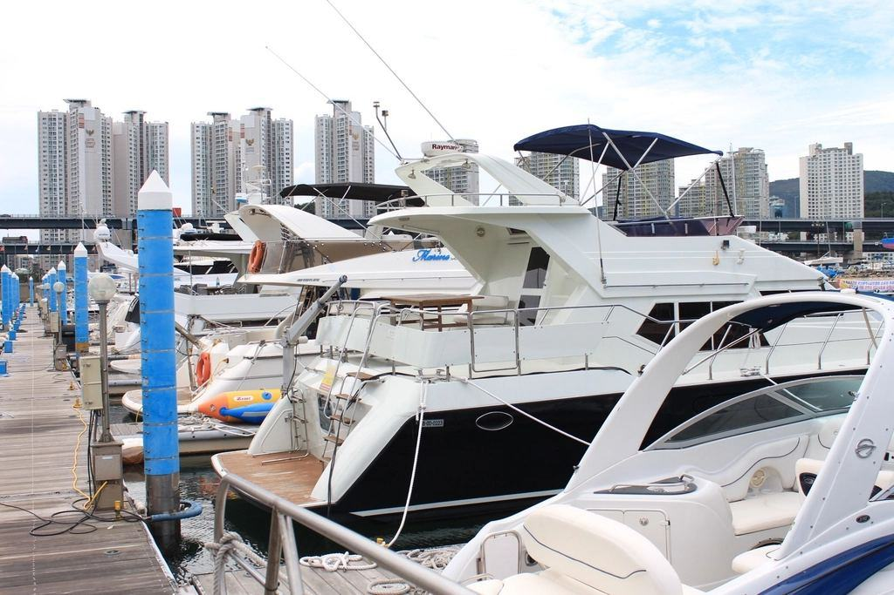

Tjänster
I dag driver Göran varvet tillsammans med dottern Elsa, som har gesällbrev som båtbyggare, och två lärlingar. Vi tar in 12–15 båtar per vinter och arbetar med virke från ekskogar i Blekinge och Småland som vi själva väljer ut och låter torka i tre år.
Vilken träbåt har du?

Renovering
En träbåt ska renoveras så lite som möjligt men så mycket som behövs. Vi byter bara det virke som inte går att rädda och bevarar originalbord, beslag och märken där det går.
Varje renovering dokumenteras med bilder och skisser i en båtjournal som följer med båten.

Nybyggnad
Vi bygger en ny båt per år, oftast en blekingseka på 5–7 meter eller en snipa. Bygget tar cirka 1 400 timmar och följer de gamla måtten och metoderna.
Kunden är välkommen att vara med och bygga under hela vintern.

Kulturhistoriska båtar
K-märkta båtar och fartyg kräver att renoveringen dokumenteras och att material och metoder stämmer med originalet. Vi har arbetat på nio K-märkta båtar sedan 2010.
Vi hjälper till med ansökan om bidrag till kulturhistoriska renoveringar.

Vinterförvaring för trä
En träbåt mår dåligt av att torka ut i en varm hall. Nätmagasinet är kallt, fuktigt och dragfritt – precis som en träbåt vill ha det.
Vi vattnar bottnarna på våren innan sjösättning så att borden sväller.
Från knivstick till sjösättning
- 1

Besiktning på bryggan
Vi kommer ut och tittar, sticker kniv i borden och knackar på spanten.
- 2

Båtjournal och plan
Du får en skriftlig plan med vad som måste göras nu och vad som kan vänta några år.
- 3

Vinter på bockarna
Renoveringen görs under vintern. Du är välkommen att titta in varje torsdag.
- 4

Vattning och sjösättning
Båten vattnas, sjösätts från slipen och ligger några dagar för att svälla innan du hämtar den.
Gesäll, mästare och dokumentation
- Mästarbrev i båtbyggeriElsa Åkesson har mästarbrev och Göran gesällbrev, utfärdade av Hantverksrådet.
- Antikvarisk dokumentationRenoveringar av K-märkta båtar dokumenteras enligt Statens maritima och transporthistoriska museers riktlinjer.
- Godkänd lärlingsplatsVarvet är godkänd lärlingsplats för båtbyggare med handledare som har mästarbrev.
- Försäkrad på varvetDin båt är försäkrad hela tiden den står på varvet och under sjösättning.